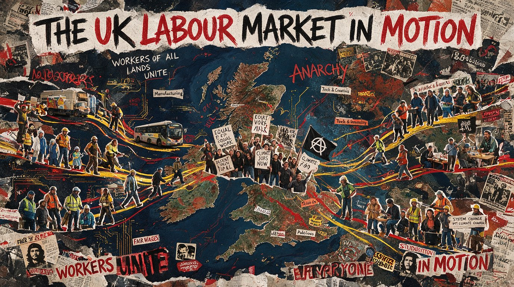

Six UK HR and recruitment stories worth reading this month. The Employment Rights Act stops being theory and starts being payroll. The apprenticeship levy squeeze arrives right on schedule. Ghosting gets worse in both directions. And we finally find out what the World Cup did to the nation’s sickie count.

The Loudspeaker · July 2026 · Edition 02 · Neil Copping
Last month I promised you the full impact of the Employment Rights Act changes. That promise is now due, because HR teams stopped talking about the Act in the abstract this month and started talking about it in payroll. Day-one paternity leave and statutory sick pay from day one are both now live, and Acas has the receipts on how many employers are struggling to keep up.
Elsewhere, the apprenticeship levy did the thing it was always going to do. The government confirmed the co-investment rate employers pay once their levy pot runs dry is jumping from 5 per cent to 25 per cent from 1 August, a change I first flagged to you as a line in a budget document back in January. It is no longer a line in a budget document. It is a bill.
I have also gone looking for the newest ghosting data, because it is a subject this publication will not let go of quietly (see The Silence That Does The Damage if you have not already), and the direction of travel is not improving. And because I made a prediction about a football tournament in the last edition, I owe you the result.
The brief remains the same. Useful, current, properly British and never dull.
A survey of 1,050 senior decision makers by Acas found day-one paternity leave is now the second-hardest Employment Rights Act change for employers to implement, cited by 27 per cent of respondents, just three points behind statutory sick pay from day one at 30 per cent. Both became day-one rights on 6 April this year. A further 23 per cent flagged the unfair dismissal protections due to take effect in January 2027 as a top concern.
Safwan Afridi, managing associate at Mishcon de Reya, said many employers still had policies and payroll processes built around the old 26-week qualifying threshold for paternity leave. Emma Cromarty, director at EC Human Resources, said the SSP change had been a “huge cost shock for SMEs”, adding that some smaller businesses wrongly believe the rules do not apply to them and are already non-compliant.
Audit your contracts and HR systems for references to the old 26-week paternity qualifying period now, not when someone asks for leave and gets refused by a system that has not caught up with the law.
Back in May I told you to brace for the World Cup. The verdict is in. Research by Robert Walters found 60 per cent of employees noticed some disruption. A separate People Management poll of 58 respondents found the most common cause was not absence at all, it was a simple lack of focus in the office, cited by 40 per cent, followed by workers calling in sick at 38 per cent. A second People Management LinkedIn poll, this one of 218 organisations, found only 18 per cent had introduced flexible arrangements such as later starts.
England beat Norway on 11 July to reach the semi-final against Argentina, and 48 per cent of workers expected more late nights if England reached Sunday’s final. Daniel Harris, managing director of Robert Walters UK and Ireland, said employers who flex around cultural moments like this tend to see staff return “more engaged and motivated”, while those who ignore it risk “greater declines in productivity”. Legal experts were clear that normal disciplinary rules still applied to anyone whose absence pattern looked suspicious.
Official data covering August to October found just 36 young people started one of the government’s seven new foundation apprenticeships, out of a programme designed as a flagship stepping stone into skilled work. Two of the seven standards, software and data, and finishing trades, recorded no starts at all. The most popular was onsite trades with 17 starts, almost half the national total from a single standard.
Ben Rowland, chief executive of the Association of Employment and Learning Providers, had already warned the rollout had been “a damp squib”, arguing the government “began by taking them to industrial strategy sectors who didn’t ask for them, need them or want them”. Charlotte Bosworth, chief executive of Lifetime Training, said the low numbers were “not a reason to step back” but a reason for government to give the programme “greater clarity of purpose”, since employers still lack a “concrete understanding of how foundation apprenticeships differ from level 2”. Not every provider is downbeat: Exeter College, the biggest single deliverer with 16 starts, said the programme had been “positively received by both employers and learners”.
From 1 August, levy-paying employers who have exhausted their growth and skills levy funds will see their co-investment contribution jump from 5 per cent to 25 per cent, with the government’s share falling from 95 per cent to 75 per cent. On a level 3 installation and maintenance electrician apprenticeship with a £23,000 funding band, that takes an employer’s contribution from £1,150 to £5,750 over the course of the apprenticeship, a 400 per cent increase. It arrives alongside the removal of the 10 per cent top-up on levy funds and a halving of the window employers have to spend their levy pot, from 24 months down to 12.
The change lands awkwardly next to the numbers. The levy is forecast to raise £4.4 billion this financial year against a £3.075 billion England apprenticeship budget, a Treasury margin of roughly £840 million that could approach £1 billion next year if spending does not rise to match. Matthew Percival, the CBI’s future of work and skills director, said businesses were “frustrated about continued speculation that apprenticeships could be further restricted or defunded, particularly as we know that the government is making significant profits on the growth and skills levy”, adding that the money “should urgently be released for its intended purpose so that businesses aren’t forced to ration the training opportunities they offer their staff”.
The squeeze is not falling evenly. UKHospitality’s skills director, Sandra Kelly, said proposals to strip levy funding from two senior hospitality apprenticeships, together worth less than £4 million a year, would “dismantle a critical progression point” for a sector that already has fewer standards than most. “This is not efficiency,” she said, “it is false economy.” The Chartered Management Institute’s petition against cuts to management apprenticeships has passed 4,000 signatures, backed by employers including Amazon, BAE Systems, Heathrow, John Lewis and Lloyds Bank.
Baroness Alison Wolf, formerly the prime minister’s own skills adviser, told FE Week that streamlining the apprenticeship system was “way overdue”. But she was equally blunt about the new short “apprenticeship units” due this year, saying she did not “understand the point” of them beyond making it easier for levy-payers to spend on existing staff, and warned that treating low start numbers as grounds for cutting niche standards, such as the level 3 watchmaker apprenticeship, would be “lazy and counter-productive”.
Read the co-investment report → Read the streamlining report →
Research covered by HR Magazine found 45 per cent of candidates have been ghosted by a recruiter after an interview, and that candidates from historically under-represented backgrounds are 62 per cent more likely to experience it than white candidates. Nearly nine in ten candidates said they expected to hear back within one to two weeks of applying. Kate Garbett, vice president for SMEs at Adecco Group, said there is “little justification for ghosting a candidate after an interview”, calling it “an unprofessional practice that can damage both a recruiter’s and a company’s reputation”.
Candidates are no longer taking it quietly. Separate industry data puts the share of recruiters who say they have been ghosted by candidates at 76 per cent, up sharply as candidates who have been ghosted themselves increasingly disappear right back. Whatever the exact split, it is a feedback loop with an obvious fix and very little incentive, on either side, to be the first one to break it.
We wrote 3,000 words on why the silence does more damage than the rejection ever could. If you have not read it yet, start there: The Silence That Does The Damage →
“I am committed to stop the ghosting of applicants when recruiting.”
Copy that line into your LinkedIn post, your email signature or your next job advert, and pair it with the hashtag #StopGhostingJobSeekers. If every recruiter and hiring manager who reads this makes that one commitment, the silence stops being the default. Read the pledge and share it →
A YouGov survey of 1,061 HR and recruitment leaders across eight markets, commissioned by HireRight, found just 18 per cent of UK respondents expect AI to increase hiring volumes this year, against 52 per cent in India and 43 per cent in Brazil. More than two in five UK HR leaders, 42 per cent, say they are not using AI in their HR function at all, the highest rate of any market surveyed, compared with just 3 per cent in India.
UK employers are also more sceptical of candidates using AI in applications, with 28 per cent viewing it negatively, more than double the global average of 13 per cent. Rob Harwood-Reid of HireRight said the findings point to “a widening divide”, warning that UK businesses approaching AI “rather more vigilantly” than international peers “could lead to a competitive disadvantage”.
Read these six back to back and the thread is money moving away from the people who need it most, dressed up as reform. The apprenticeship levy is on course to hand the Treasury close to £1 billion it did not spend on skills, while the employers who fund it face a 400 per cent jump in what they pay once their pot runs dry. Foundation apprenticeships, aimed at exactly the young people the levy surplus should be helping, mustered 36 starters in three months because the sectors that actually want them, hospitality among them, were not invited to the table.
I think the fix is not complicated, even if it is politically inconvenient. Release the surplus for its intended purpose, as the CBI is asking. Let sectors with genuine entry-level demand build their own foundation standards instead of waiting for a strategy document to notice them. And be honest that “apprenticeship units” are, on the evidence so far, at real risk of becoming a tidy way for large levy-payers to fund the CPD they were always going to buy anyway, while the 16-year-old in Torbay who wanted a way into a trade waits for a standard nobody has built yet.
Ghosting sits in the same family of problem, just with a smaller balance sheet and a bigger human cost. Forty-five per cent of candidates ghosted after an interview, and candidates from under-represented backgrounds ghosted at 62 per cent above that rate, is not a communication hiccup, it is a system that has decided some people’s time matters less than others’. The fix costs nothing but a template email and a moment of discipline. That it still is not standard practice in 2026 says more about incentives than about effort.
And for what it is worth: I was wrong to brace quite so hard for the World Cup. Flexibility, where employers actually offered it, worked. The lesson generalises well beyond football. Most disruption is not a crisis to be policed, it is a predictable moment that a good policy, written in advance, quietly absorbs.
Jack Mellor, CEO of Personnel Checks, argues that part-time and flexible workers are too often screened less rigorously than full-time staff, despite frequently having the same access to sensitive systems and customers. Risk is a function of access and responsibility, he writes, not hours worked.
It is not all bad news for SMEs. From October 2026, non-levy-paying employers will be able to claim a payment of up to £2,000 for recruiting a new apprentice aged 16 to 24, and from the 2026-27 academic year the government will fully fund apprenticeships for under-25s at non-levy employers. Levy funds will also be usable for shorter “apprenticeship units” rather than only full standards.
Read the official Growth and Skills Levy guidance →
Every fact, figure and quote in this edition is drawn from the primary reporting below, checked directly against the original article on 19 July 2026. No stat in this edition is estimated, rounded up for effect or sourced from a press release alone without an underlying published report.
The 45%, 62% and 88% ghosting statistics above come directly from HR Magazine’s published report of Greenhouse’s candidate research; we could not independently verify the article’s original publication date, so we have not attached a specific 2026 date to that citation. We deliberately left out a widely recycled “76% of recruiters have been ghosted” statistic that traces back to a 2021 Indeed study rather than to any current, checkable source - if we can’t verify a number against its original source, it doesn’t go in The Loudspeaker.
Subscribe on LinkedIn to get every edition first, on the last Friday of the month.
Subscribe on LinkedIn → Subscribe to The Dispatch by email →